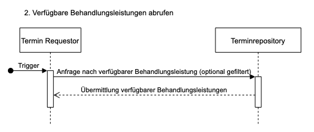
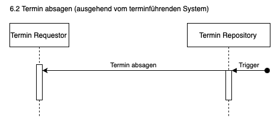
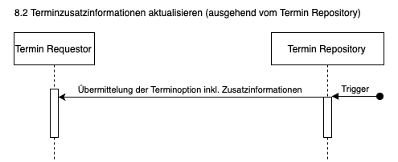
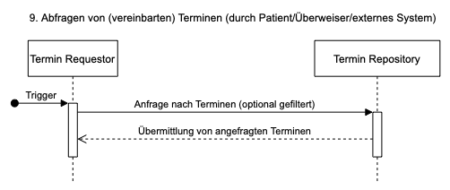

Für folgende Interaktionen werden im vorliegenden Implementierungsleitfaden Vorgaben für die Umsetzung innerhalb der ISiK-Schnittstelle definiert:
| Akteure | Transaktionen | Festlegungsstatus |
|---|---|---|
| Termin-Repository | - Übermittlung von Patienteninformationen - Verfügbare Behandlungsleistungen abrufen - Verfügbare Terminlisten abrufen - Abfrage von (verfügbaren) Terminblöcken - Termin neu buchen (Buchungsmanagement von verfügbaren Terminen) - Termin absagen (ausgehend vom Client) - Termin verschieben (ausgehend vom Client) - Terminzusatzinformationen aktualisieren (ausgehend vom Client) |
Verplichtend |
| Termin-Requestor | - Übermittlung von Patienteninformationen - Verfügbare Behandlungsleistungen abrufen - Verfügbare Terminlisten abrufen - Abfrage von (verfügbaren) Terminblöcken - Termin neu buchen (Buchungsmanagement von verfügbaren Terminen) - Termin absagen (ausgehend vom Client) - Termin verschieben (ausgehend vom Client) - Terminzusatzinformationen aktualisieren (ausgehend vom Client) |
Optional |
| Termin-Consumer | - Abfrage von (vereinbarten) Terminen | Optional |
Zudem kann die Situation eintreten, dass ein System die Aufgaben eines Termin Repositories übernimmt, jedoch kein terminführendes System ist (z. B. ein Patientenportal) und die Termine mit einem weiteren Termin-Repository synchronisiert (z. B. KIS). In diesem Fall übernimmt das System, welches Termine an das terminführende System sendet, die Rolle eines Termin-Requestors. Diese Option steht einem Termin-Repository offen, falls es für bestimmte Use Cases notwendig ist; jedoch ist dies nicht verpflichtend für die Rolle des Termin Repositories.

Für die Auswahl eines verfügbaren Terminblocks kann es notwendig sein, dass das Termin-Repository vorab durch den Termin-Requestor Vorabinformationen (z.B. für die Krankenversicherung) erhält. Diese können über eine schreibende Schnittstelle an das Termin-Repository übermittelt werden. Es ist zu beachten, dass das Termin-Repository gegebenenfalls diese Informationen separat von eigens erstellten Datenobjekten vorhält und/oder die Information dauerhaft erst nach einer manuellen Überprüfung durch einen Benutzer freigibt.
Gleichermaßen können Informationen zum Patienten vorab übermittelt werden, sodass gewisse Basisangaben bereits im Terminrepository vorliegen.
Siehe Anlage einer Patient-Ressource für die technische Umsetzung.

Als Einstiegspunkt in die Terminvereinbarung können durch den Termin Requestor alle verfügbaren Behandlungsleistungen (HealthcareServices) abgerufen werden, für die das Termin-Repository Informationen zu notwendigen Ressourcen (Räume, Personen, Geräte, etc.) bereitstellt.
Siehe für die technische Umsetzung. Es sind die Hinweise zum Abruf der ValueSets für die Kodierung der Medizinischen Behandlungseinheit zu beachten.

Der Termin-Requestor kann nach der Auswahl einer Behandlungsleistung verfügbare Terminlisten (Schedules) für diese im Termin-Repository abrufen. Die Terminlisten repräsentieren somit den “Kalender”, in dem Termine gebucht werden können.
Siehe für die technische Umsetzung.

Für einen jeweiligen Kalender kann der Termin-Requestor die darin definierten Terminblöcke abfragen. Diese können entsprechend eines Zeitraums und/oder Status (verfügbar, belegt) gefiltert werden.
Siehe für die technische Umsetzung.

Für einen durch den Benutzer ausgewählten Terminblock bzw. mehreren aufeinander folgenden Terminblöcken kann durch den Termin-Requestor ein Termin angefragt werden. Dieser kann direkt oder erst nach manueller Bestätigung durch das Termin-Repository freigegeben werden.
Es ist zu beachten, dass innerhalb dieser Aktion ein terminführendes Termin-Repository die Rolle des Termin-Requestors übernehmen kann und den neu-angelegten Termin in ein weiteres Terminrepository spiegelt.
In diesem Kontext kann das Termin-Repsoitory zudem Zusatzinformationen (z.B. Lagepläne) an den Termin-Requestor übermitteln.
Die Buchung eines Termins kann auch eine Aktualisierung eines Termins darstellen, indem für einen bestehenden Termin ein oder mehrere neu ausgewählte Terminblöcke an das Terminrepository übergeben werden.
Siehe für die technische Umsetzung.


Termine können sowohl durch den Termin-Requestor als Client oder durch das Termin-Repository als terminführendes System abgesagt werden.
Siehe für die technische Umsetzung.
Eine Verschiebeoperation kann im Normalfall als eine Neubuchung mit geändertem Zeitfenster ausgeführt werden (siehe Interaktion 5, bzw. für die technische Umsetzung.)
Bei einer Verschiebung kann allerdings auch eine Absage und Neubuchung eines Termins notwendig werden, wenn ursprüngliche Ressourcen nicht mehr verfügbar sind für den neu zu belegenden Slot:


Termine können sowohl durch den Termin-Requestor als Client oder durch das Termin-Repository als terminführendes System verschoben werden. Im Falle, dass das Termin-Repository den Termin verschiebt ist der Termin-Consumer darüber zu benachrichtigen.
Siehe für die technische Umsetzung.

Termine können sowohl durch den Termin-Requestor als Client oder durch das Termin-Repository als terminführendes System durch Zusatzinformationen (z.B. welche Teilnehmer oder Ressourcen sind Teil des Termins) erweitert werden.
In diesem Kontext kann der Termin-Requestor zudem Zusatzinformationen (z.B. Einwilligungen) an das Termin-Repository übermitteln.
Siehe für die technische Umsetzung.

Der Termin-Requestor oder Termin-Consumer kann einen, mehrere oder alle Termine eines Termin Repositories abfragen.
Siehe für die technische Umsetzung.